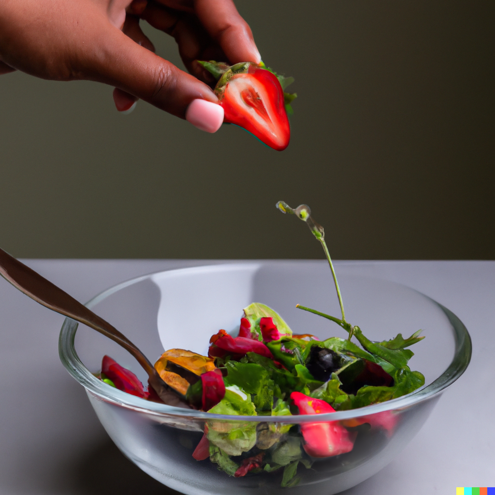

Data Viz animation and interactivity in Quarto
Deepsha Menghani
2023-09-20
My goal is to answer
- What is Data Viz animation, interactivity and linking?
- How can you get started with it in your storytelling?
- What is Data Viz animation, interactivity and linking?
- And have fun learning!!
- How can you get started with it in your storytelling?
- What is Data Viz animation, interactivity and linking?
There are lots of amazing packages for animation and interactivity like…
Shiny
Highcharter
Plotly
Crosstalk
Observablejs Plot
Ggiraph
Gganimate
And many more…
For this presentation, I will share examples of -
Plotly
Crosstalk
But first.. What is Ted Lasso and who is Roy Kent?
Various moods of Roy Kent
Mad
Sad
Happy
Amused
Loving
Surprised
Thoughtful
Joyous
So, let’s look at the number of F-bombs dropped by Roy Kent!
How do I know this?
Because I watched each episode at 2X speed and diligently noted down every F*bomb and gesture reference!!
FOR SCIENCE!!
Animation
Q1: What season did Roy Kent end up dropping the most number of F-bombs?
By adding animation you can
- Hold the tension in your story
- Add a third variable to your plot not directly visible in a static 2D plot
Code structure for creating animation using Plotly
Simple bar plot
Code structure for creating animation using Plotly
Simple bar plot
Bar plot with animation
Interactivity
Let’s get technical and talk about statistics
Let’s get technical and talk about statistics - “F-SCORE”
What is an episode’s F-SCORE
\[ f-score = {Roy Kent F-bombs / \choose Total F-bombs} * 100 (\%) \]
Q2: Which season has the most number of episodes with Roy Kent’s F-Score > 50%?
In non-statistical terms - In how many episodes per season did Roy Kent contribute to more than half the F-bombs?
And…which season had the highest number of such episodes?
Can you guess the answer?
Season 1 - Total F-bombs: 56
Season 2 - Total F-bombs: 106
Season 3 - Total F-bombs: 138
We can display F-score for each episode as below
Or we can add a “season” checkbox
Through interactivity you can
- Turn your viz to a dashboard style report
- Make your viz more accessible
Code structure for adding interativity with Crosstalk
Simple bar plot
Code structure for adding interativity with Crosstalk
Simple bar plot
Bar plot with interativity
Code structure for adding interativity with Crosstalk
Simple bar plot
Bar plot with interativity
Linking
Q3: Did Roy Kent have a lower average F-score while dating Keeley or while he was coaching?
We can use a bar plot to display average F-Score
This is just fine… but as Roy Kent said -

So, let’s enable additional insights by linking it to another plot
Through linking you can
- Add layers to your story
- Give your stakeholders more control to explore and arrive at their own insights
Code structure for linking two plots
Code structure for linking two plots
Code structure for linking two plots
shared_data <- crosstalk::SharedData$new(dataset, key=~Dating_Coaching_flag)
plot1 <- shared_data |>
plotly::plot_ly() |>
group_by(Dating_Coaching_flag) |>
summarise(avg.fscore = mean(F_score, na.rm=TRUE)) |>
add_bars(y = ~Dating_Coaching_flag, x = ~avg.fscore, type="bar")
plot2 <- shared_data |>
plotly::plot_ly(x = ~Episode, y = ~F_count) |>
add_bars(type="bar") Code structure for linking two plots
shared_data <- crosstalk::SharedData$new(dataset, key=~Dating_Coaching_flag)
plot1 <- shared_data |>
plotly::plot_ly() |>
group_by(Dating_Coaching_flag) |>
summarise(avg.fscore = mean(F_score, na.rm=TRUE)) |>
add_bars(y = ~Dating_Coaching_flag, x = ~avg.fscore, type="bar")
plot2 <- shared_data |>
plotly::plot_ly(x = ~Episode, y = ~F_count) |>
add_bars(type="bar")
subplot(plot1,plot2)Code structure for linking two plots
shared_data <- crosstalk::SharedData$new(dataset, key=~Dating_Coaching_flag)
plot1 <- shared_data |>
plotly::plot_ly() |>
group_by(Dating_Coaching_flag) |>
summarise(avg.fscore = mean(F_score, na.rm=TRUE)) |>
add_bars(y = ~Dating_Coaching_flag, x = ~avg.fscore, type="bar")
plot2 <- shared_data |>
plotly::plot_ly(x = ~Episode, y = ~F_count) |>
add_bars(type="bar")
subplot(plot1,plot2) |>
plotly::highlight(
persistent = TRUE
, on = "plotly_click"
, off = "plotly_doubleclick"
, dynamic = TRUE) Now that you have these tools…
Let’s combine Animation and Interactivity and Linking - all together!!!
In other words, what not to do!!
Disclaimer: Not recommended…
So if you were planning to now make everything animated and interactive…

Right within Quarto, animation and interactivity enable you to

Right within Quarto, animation and interactivity enable you to
Next steps
Github repository for code
RData package: “richmondway”
Let’s connect